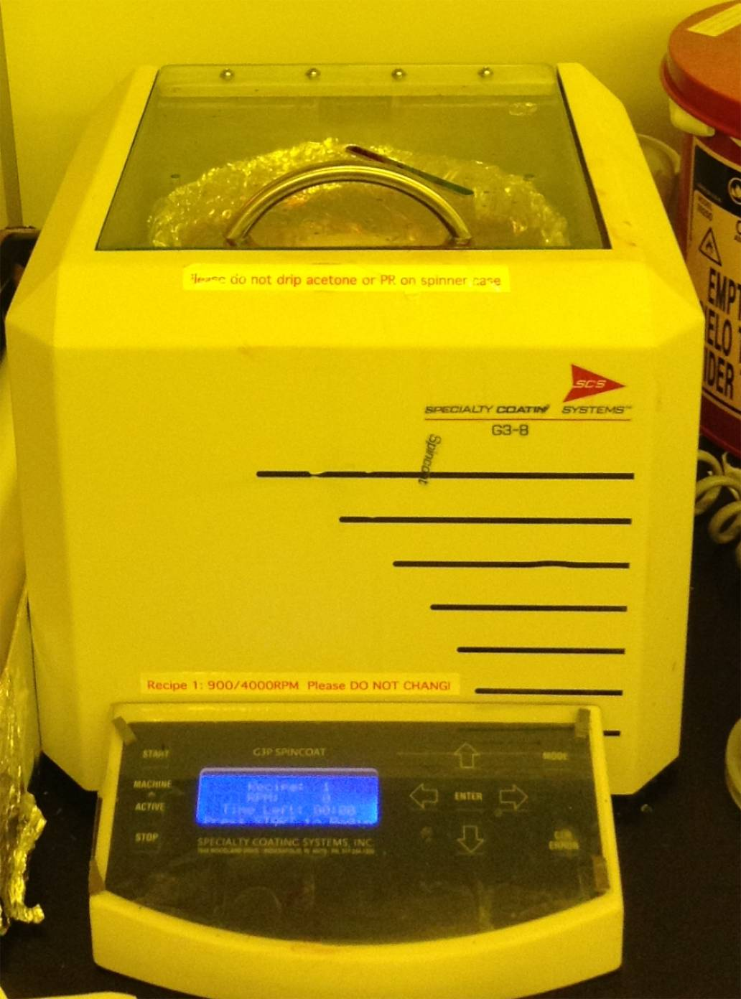
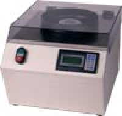
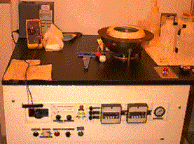
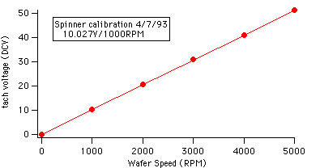

SRS Spinner (Headway spinner notes follow below)

SRS G3 spinner

Programming Instructions:
- Press CHG/PRE
- Use +/- to scroll to desired recipe number
- Press ENT to accept number
- Press + to move to RPM 1, then ENT.
- Set first spin speed in RPM using +/- followed by ENT
- Press + to move to RAMP 1, then ENT.
- Set ramp to first in seconds using +/- followed by ENT
- Press + to move to RAMP 1, then ENT.
- Set first spin speed in RPM using +/- followed by ENT
- Press + to move to TIME 1, then ENT.
- Set time to hold at first spin speed in seconds using +/- followed by ENT
- Press + to move to RPM 2, then ENT.
- continue as above to set speeds 2 and 3 as needed. Set ramp 4 to 1 second.
- Press MSG to get out of program mode.
Running Instructions:
- Verify that resist waste container under spinner bench is not full.
- Listen to ensure pressure air is on to purge spinner from any explosive solvent vapor. Spinner will not power up if purge is absent.
- Check and/or change program (above).
- Turn off vacuum (manual green valve behind spinner)
- Mount sample.
- Turn on vacuum (manual green valve behind spinner...
- Vacuum indicator on Headway should come to black mark; if not, sample may not be set correctly or there may be a leak at the Headway spinner, or if no vacuum, also red valve on wall under bench may be off.
- Cover with snorkel. Dispense through snorkel.
- Press START to initiate spin.
- After spin, turn off vacuum (manual green valve) and remove sample.
- Wash down bowl. If any photoresist has entered spinner chuck vacuum hole, purge it and empty trap beaker on vacuum line behind the spinner.

Headway Photoresist Spinner
Headway Photoresist Spinner
The spinner is used to deposit and develop a thin coating of photoresist for
photolithography.
- Flip the power switch to the "on" position.
- Press the Power Reset button (note: This button must be re-pressed any time the power has been interrupted. ie. Depression of the Emergency Stop button or opening the access door on the left hand side of cabinet).
- Place the vacuum switch on Auto (this turns the vacuum sample
hold off until the start button is pressed).
- Place holder and sample on vacuum chuck and center the sample.
- Verify centering:
- Turn dual speed controls to minimum,
- Set first timer to 60s, and
- Depress the Start button.
- Listen for vacuum leak around sample, and adjust if necessary.
- Slowly turn up first speed to a few RPM, and check sample for centering.
- Pss the stop button, and if necessary, reposition sample and repeat above until centered.
- Set the dual timers to the desired cycle times.
- Press the Start button. While the chuck is spinning, adjust to the desired spinning speed for each part of the cycle, using calibration chart below. (Speed 1 corresponds to Timer 1 and Speed 2 to Timer 2.) Reduce time 1 to zero to proceed to timer 2.
- Set each timer to desired value (in seconds)
note: Speed 1 A is a fine tune adjustment for Speed 1.

Christopher.G.Levey@
dartmouth.edu